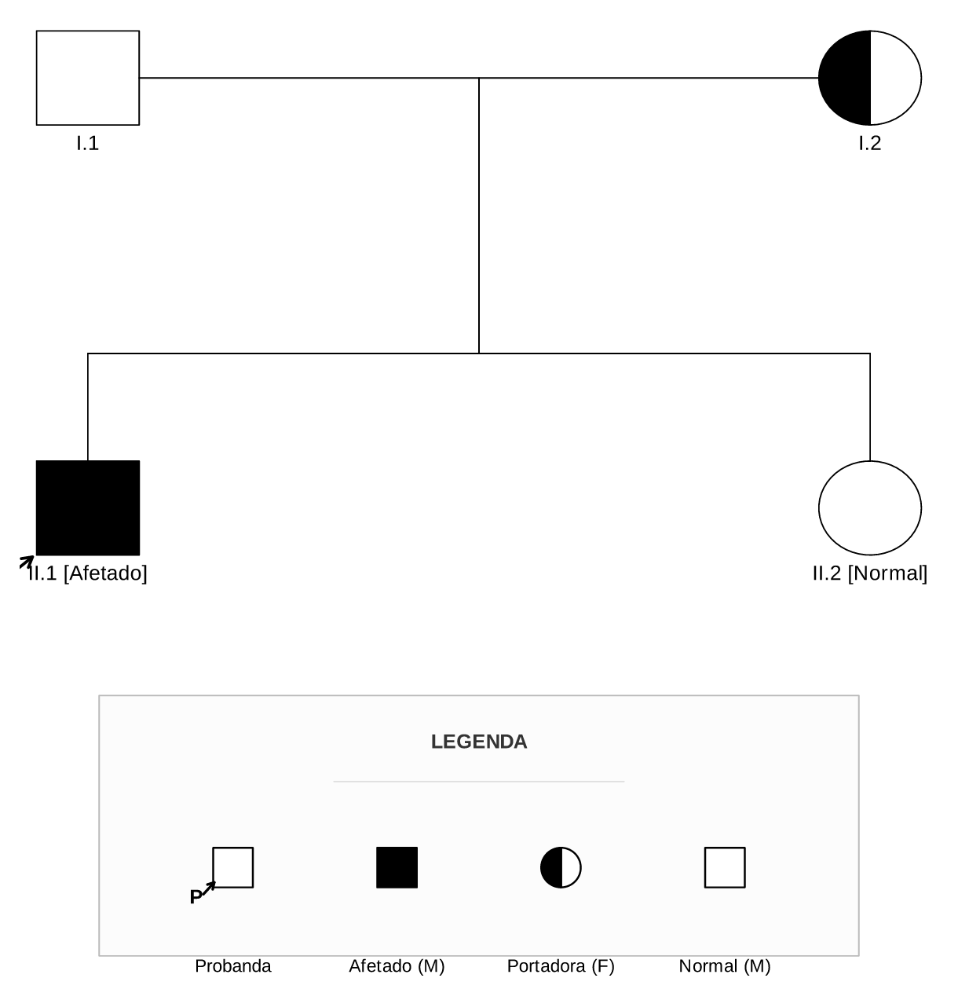

MOTOR LEGADO // EM DESCONTINUAÇÃO
Motor kinship2 — Heredogramas Legado
O motor kinship2 foi a primeira implementação de heredogramas do Joaju. Atualmente, ele permanece disponível exclusivamente para compatibilidade com notas existentes. Para novos trabalhos, recomendamos a migração para o motor pedtools.
Atenção: O motor kinship2 está em processo de descontinuação (phase-out). Novos recursos clínicos (como proporcionalidade multi-geracional e half-fill perfeito) recebem suporte ativo prioritário no motor
pedtools.
📋 Estrutura da Tabela de Entrada (CSV)
| Coluna | Sinônimos | Obrigatória | Descrição |
|---|---|---|---|
id |
- | Sim | Identificador do indivíduo. |
dadid |
pai, fid |
Sim | ID do pai biológico (0 para fundador). |
momid |
mae, mid |
Sim | ID da mãe biológica (0 para fundadora). |
sex |
sexo |
Sim | Sexo: 1/M (Macho), 2/F (Fêmea), 3 (Desconhecido), 4/T (Feto). |
affected |
fenotipo, afetado |
Não | Condição: 1/hom (afetado), het/portador (portador), ? (suspeito). |
status |
falecido |
Não | 1 ou falecido para barra de óbito. |
proband |
probando |
Não | 1 ou sim para seta de probando. |
label |
rotulo |
Não | Texto exibido sob o símbolo. |
gemeo_com |
- | Não | ID do irmão gêmeo para ligar os ramos. |
tipo_gemeo |
- | Não | MZ (Monozigótico) ou DZ (Dizigótico). |
⚙️ Opções Repassadas ao Motor R (plot.pedigree)
| Diretiva / Parâmetro | Tipo | Padrão | Descrição |
|---|---|---|---|
cex |
Numérico | 0.92 |
Tamanho da fonte dos rótulos sob cada símbolo no R kinship2. |
symbolsize |
Numérico | 3.2 |
Escala física dos símbolos no kinship2. |
branch |
Numérico | 0.35 |
Comprimento e curvatura das ramificações de parentesco. |
density |
Vetor R | c(-1, -1) |
Densidade de preenchimento/hachura (-1 para preenchimento sólido). |
angle |
Vetor R | c(0, 0) |
Ângulo em graus das linhas de preenchimento. |
col |
String / Vetor | "black" |
Cor das bordas e linhas do pedigree. |
legend |
Vetor R | NULL |
Rótulos da legenda vetorial inferior. |
legend.type |
Vetor R | NULL |
Tipos da legenda: sq_empty, circ_half, sq_solid, proband, etc. |
🧪 Exemplos Práticos
1. Heredograma com Probanda e Heterozigoto
Markdown (kinship2)
```kinship2
%% layout.width=90% layout.max_width=600pt cex=0.88 symbolsize=2.85 legend=c("Normal (M)","Portadora (F)","Afetado (M)","Probanda") legend.type=c("sq_empty","circ_half","sq_solid","proband")
id,pai,mae,sex,fenotipo,proband,label
1,0,0,M,wt,0,I.1
2,0,0,F,het,0,I.2
3,1,2,M,afetado,1,II.1 [Afetado]
4,1,2,F,wt,0,II.2 [Normal]
```2. Gêmeos Monozigóticos (MZ)
Markdown (kinship2 com gêmeos)
```kinship2
%% layout.width=85% layout.max_width=520pt cex=0.90 symbolsize=2.9
id,pai,mae,sex,fenotipo,gemeo_com,tipo_gemeo,label
1,0,0,M,wt,0,,Pai
2,0,0,F,wt,0,,Mãe
3,1,2,M,wt,4,MZ,Gêmeo 1
4,1,2,M,wt,3,MZ,Gêmeo 2
```Resultado da Renderização
